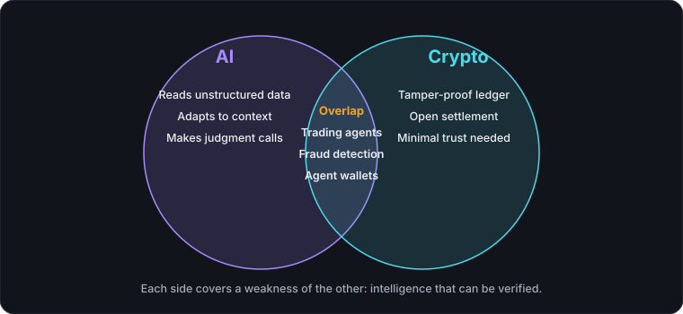

For years, artificial intelligence and blockchain technology evolved in separate lanes — one focused on prediction and pattern recognition, the other on trust and decentralization. That's changing fast. As both fields mature, they're increasingly converging into something genuinely new: financial systems that can think, verify, and transact without a human in the loop.
Why AI and crypto fit together
At first glance, the pairing might seem odd. AI thrives on centralized compute and massive datasets; crypto is built around decentralization and minimal trust. But that tension is exactly what makes the combination powerful.

Blockchains offer something AI systems have always lacked: a tamper-proof, transparent ledger of truth. Meanwhile, AI offers blockchains something they've always lacked: the ability to interpret unstructured data, adapt to context, and make judgment calls. Put together, you get systems that are both intelligent *and* verifiable.
Where the overlap is happening
AI trading agents. An AI trading agent is software that analyzes markets and places trades by itself. Autonomous agents now analyze on-chain data, social sentiment, and market signals to execute trades in real time. Unlike traditional bots that follow rigid rules, these agents can adapt strategies as market conditions shift — though this also means users need to trust the model's judgment, not just its code.
On-chain security and fraud detection. Smart contract exploits cost the industry billions. AI-driven auditing tools now scan contract code for vulnerabilities before deployment, and machine learning models monitor transaction patterns to flag wallet drains, rug pulls, and wash trading as they happen — often faster than human analysts could react.
Decentralized AI compute networks. A growing category of crypto projects rewards users for contributing GPU power to distributed AI training networks. The pitch: break Big Tech's monopoly on compute by letting anyone earn tokens for renting out idle hardware.
AI agents as on-chain participants. Perhaps the most futuristic overlap: AI agents that hold their own crypto wallets, pay for their own API calls, and transact with other agents autonomously. This is the foundation of what some call the "agentic economy" — software that doesn't just recommend actions but executes and pays for them directly.
Tokenized data and model marketplaces. Blockchains are being used to track data provenance and compensate contributors when their data trains a model, addressing one of AI's thorniest problems: who gets paid when their work fuels someone else's algorithm.
The risks worth naming
This convergence isn't all upside.
- Opacity stacking on opacity. Crypto already struggles with transparency for average users; adding AI decision-making on top can make systems even harder to audit or explain.
- Speed of failure. Autonomous agents making financial decisions can also amplify losses at machine speed if a model misreads a signal or gets manipulated.
- New attack surfaces. Prompt injection and data poisoning are now financial security risks, not just chatbot quirks — an attacker who can manipulate an AI trading agent's inputs may be able to manipulate its outputs.
- Regulatory uncertainty. Neither AI nor crypto has settled regulatory frameworks individually; combining them creates compliance questions regulators are still catching up to.
Guardrails that help
Three habits reduce these risks: keep a human confirmation step for anything that moves money, enforce position limits in code instead of in the prompt, and compute numbers with ordinary code instead of asking a model for them. CryptoBolt follows the same thinking. Its AI chat can propose changes to a paper-trading account, but nothing changes until you press Confirm, and price levels come from deterministic math rather than the model.
What's next
The near-term trajectory points toward more autonomous, agent-driven finance: AI systems that don't just advise on crypto markets but actively participate in them, backed by on-chain accountability. Whether that makes markets more efficient or more fragile will likely depend less on the technology itself and more on how carefully these systems are designed, tested, and constrained.
The convergence of AI and crypto isn't a gimmick or a buzzword mashup — it's a genuine attempt to solve each technology's weaknesses with the other's strengths. Like any early-stage frontier, it's equal parts promising and unproven.
Where to go next
- How CryptoBolt's AI research stays grounded in real data: a concrete example of constraining a model.
- Why CryptoBolt doesn't predict crypto prices: what AI can and cannot tell you about markets.
- Glossary: AI trading agent, prompt injection, hallucination and other terms.
See how CryptoBolt keeps AI research grounded in real data →